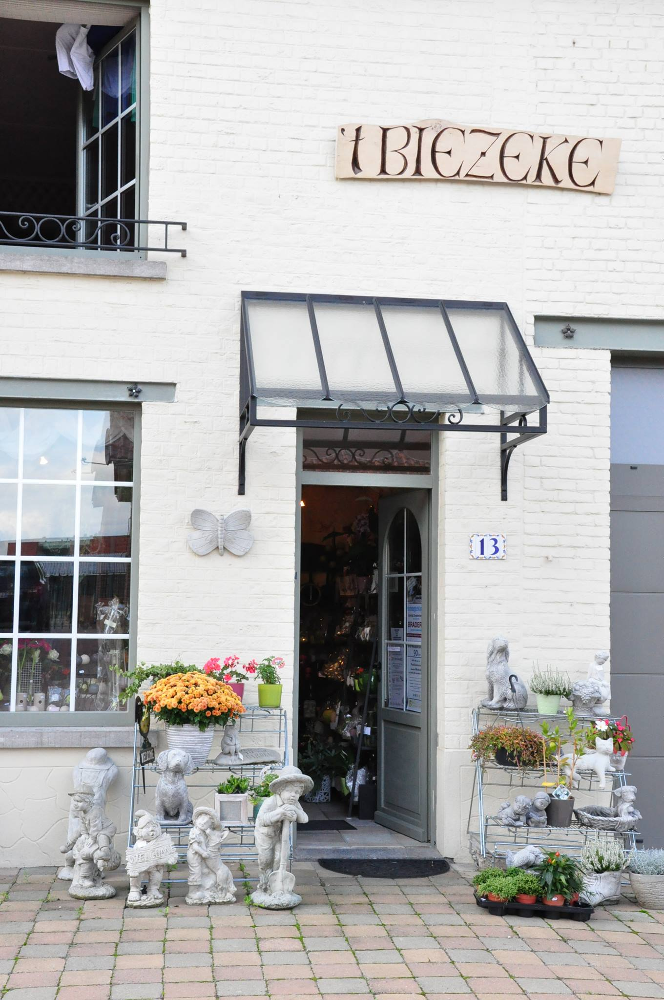

Over 't Biezeke
Wij zijn een kleine bloemen- en kadowinkel in het centrum van Meerbeek. Originele en homemade artikelen zijn onze troef. Deze winkel is onstaan in 1988 te Leuven. Enkele jaren later in 1996 zijn we verhuisd naar Meerbeek. Hier is 't Biezeke nog steeds gehuisvest. Al jaar en dag wordt dit zelfstandig winkeltje uitgebaat door Hilde Mercks en ook door hulp van famillie. Meerbeek is door enkele veranderingen gegaan de laatste jaren terwijl de authenticiteit van de winkel hetzelfde bleef. U kan ons bezoeken tijdens de openingsuren en wij zijn gemakkelijk te berijken via auto of het openbaar vervoer: namelijk DeLijn bussen 351 en 651.
